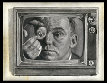Rod Serling Tribute - Photoshop Montage/Pencil Sketch - 2014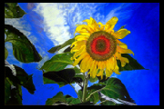Sunflower - Oil on canvas - 2014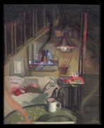Interior View - Oil on canvas - 1991 - This was my first ever attempt to paint double vision perspective.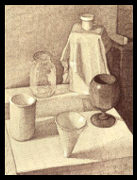Study for Double Vision Still Life - Pen on paper - 1991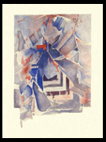Catastrophy - Abstract photomontage/Guache - 1988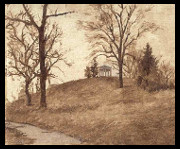The Tomb of James Whitcomb Riley - Oil on canvas - 1993 - I like to paint in cemeteries.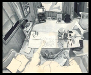How to draw and paint like a complete idiot (admit you don't know your own place in the universe) - Guache on paper - 1992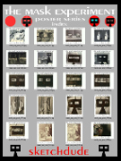Poster Index for the Mask Experiment as published on the World Wide Web in 2001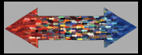Homage Series Number Four - Oil on panel - 1992 - All of these are on arrow shaped canvas panels. I did five of these in all if I remember correctly. I ended up selling this one on eBay. The arrow pattern was inspired by the I-Ching.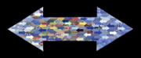Homage Series Number Five - Oil on panel - 1993Homage Series Number Three - Oil on panel - 1992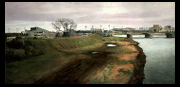Skyline over White River Parkway - Oil on canvas - 1998